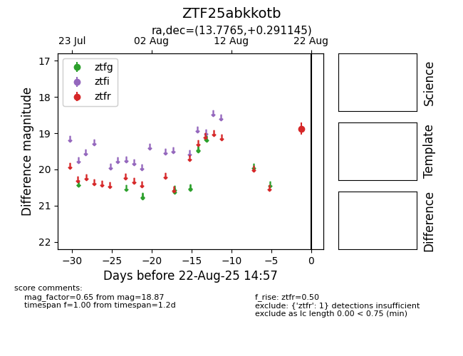

Target ZTF25abkkotb at 2025-08-22 14:57, see:
FINK: fink-portal.org/ZTF25abkkotb
Lasair: lasair-ztf.lsst.ac.uk/objects/ZTF25abkkotb
ALeRCE: alerce.online/object/ZTF25abkkotb
alt names
ZTF25abkkotb (ztf,alerce)
coordinates:
equatorial (ra, dec) = (13.7765,+0.29114)
galactic (l, b) = (124.9226,-62.56642)
photometry
last ztfr=18.87
1 ztfr detections
